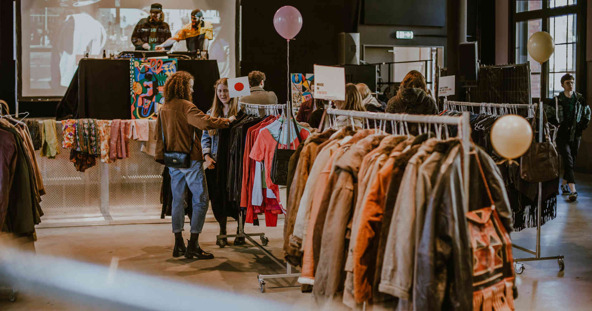

SUSTAINABLE FASHION
Going to the mall or doing online shopping is a fun activity to do. If there is a special event that is coming up and you want to dress up, finding a perfect outfit can be essential. Unfortunately buying new and cheap clothes is highly impacting our environment. Mass consumerism is a major issue developed countries are facing, our society is addicted to constantly buying new things as it gives us the sense of excitement.
We are here to suggest alternative ways of shopping, from clothes, to bags, shoes and accessories, as well as new or second hand. We do understand that it is harder to get a hold of sustainable clothes or second-hand clothes as these brands aren’t available in your local mall or not assembled on one website. We hope that through this website, you will find options that will suit your need.
THE PROBLEM OF FAST FASHION
In the last two decades something has changed in the fashion industry. Clothes have become cheaper, trend cycles have sped up and shopping has become a monthly if not weekly event for many of us. Fast Fashion, large global chains dominate the shopping malls and online world. But how does it impact people and the planet?
WHAT IS FAST FASHION?
Fast fashion is a business model that uses cheap materials and labor to churn out clothing collections at a rapid pace and can be summed up as cheap, trendy clothing, that samples ideas from fashion shows and/or celebrity culture and turns them into garments available online and in stores almost overnight. Rather than being just a category, fast fashion is a model of mass-producing cheaply made, ‘of-the-moment’ items that are sold at a lower price point. It also reflects the growing consumer desire for speed and value within retail. It means that, instead of waiting for new seasonal collections (i.e. spring / summer), consumers can get their hands on a continuous cycle of trend-led clothing, all year round.

>
THE IMPACT OF FAST FASHION
Fashion—a $2.5 trillion sector—is the second most polluting industry on Earth, right behind oil. The pressure to reduce costs and speed up production time means that environmental corners are cut in the name of profit. Fast Fashion’s negative impact includes the use of cheap, toxic textile dyes – with the fashion industry the second largest polluter of clean water globally after agriculture.
The speed at which garments are produced also means that more and more clothes are disposed of by consumers, creating a huge amount of textile waste. In Canada, the average person throws out 81 pounds of textiles annually, while North Americans send 9.5 million tons of clothing to the landfill every year — most of which could be reused.
On April 24, 2013 the world got a reality check when the Rana Plaza clothing manufacturing complex in Bangladesh collapsed, killing over 1,000 workers and injuring over 2,500. There are approximately 40 million garment workers in the world today; many of whom do not have rights or protections. They are some of the lowest paid workers in the world and roughly 85% of all garment workers are women. The exploitation of women’s work is too big to ignore.
ALTERNATIVES & SOLUTIONS
SUSTIANABLE FASHION
Sustainable fashion is a movement and process of fostering change to fashion products and the fashion system towards greater ecological integrity and social justice. Sustainable fashion concerns more than addressing fashion textiles or products. It comprises addressing the whole system of fashion. This means dealing with interdependent social, cultural, ecological and financial systems.[1] It also means considering fashion from the perspective of many stakeholders - users and producers, all living species, contemporary and future dwellers on earth. Sustainable fashion therefore belongs to, and is the responsibility of, citizens, public sector and private sector. A key example of the need for systems thinking[2] in fashion is that the benefits of product-level initiatives, such as replacing one fiber type for a less environmentally harmful option, is eaten up by increasing volumes of fashion products. An adjacent term to sustainable fashion is eco fashion.
For more information on sustainable fashion, please visit the
Sustianable Fashion Matterz website !

SECOND HAND & THRIFT SHOPPING
With fast fashion seasons now changing every single week, new garments are being produced far too often. Ditch fast fashion like it’s last week’s trends and start shopping thrift! Shopping thrift is the best way to reduce your clothing footprint. It is a great way to find high quality, unique garments at a fraction of the price of buying new.
When shopping thrift make a list of what you are looking for before you go to help get organized. Make sure you try everything on before you buy it! Sure, it takes more time, but thrifted clothes can fit nothing like you expect them to. Look for staple and layering pieces when you shop. When you buy something, try to picture how often you’ll wear it. If it can be worn often, in multiple ways and with different outfits, it’s worth buying.
WEBSITES & APPS
These are different websites and apps that will help you guide your journey on a more sustainable wardrobe. Some are similar to one another and others are unique. Of course, there are way more options out there, we just wanted to share those that we like the most and use everyday. By wardrobe we don't only mean clothes, we also talk about bags, shoes, jwellery and more. These websites and app offer a wide range of price variety.
An essential tip to keep in mind is, do not have something specific in mind as, be open and you might find somethig even better.
ThreadUP, Depop and Vinted are quite similar in their principle, on these wbesite you can buy clothes as well as sell clothes. People are very friendly and are open for swaps.
Here we're not just talking about ASOS, we are talking about their 'Responsible Edit' category, in which they select clothes that are either made out of recyled or sustianable material.
Lastly, Good on You is a tool where you can look up how ethical specific brands are. They thorougly research a brands information on labour, animals and environement and base on specific standards attribute brands a grade. They also inform you on what is going on in the sustainable fashion industry.